重要指南
你一定需要知道的商人們
本攻略介紹你需要知道的商人位置和他們賣的貨品，有的商人不在地圖標注，如果怕漏可以在地圖標點一下。以下沒有說明的話商人都是在黃色箭頭位置。
? 所有圖片均可雙擊放大；也可聚焦圖片后按 Enter 查看原圖。
清河不羨仙-唐寶
唐寶是你解鎖重要心法“易水歌”的方式，絕對不能錯過。


開封臨津渡-唐綸
唐綸賣很多你需要的心法書頁，千萬別錯過。早期就靠他升級心法了。


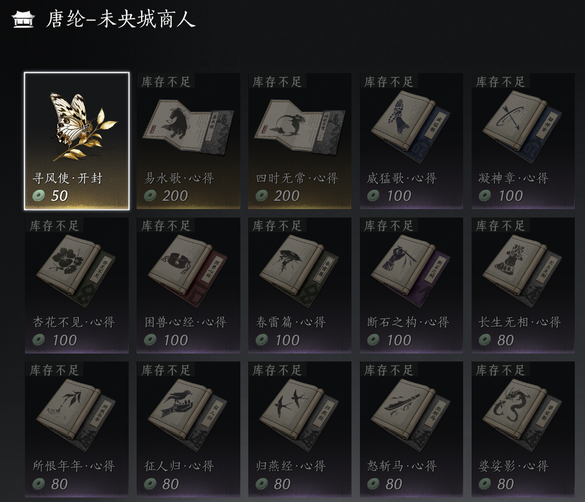
開封雜賣場-趙飛煙私庫
位置在開封皇宮北邊，雜賣場界碑東北方向，下圖商店圖標的位置。需要潛入進去和趙飛煙對話后解鎖。可以在他這里用通寶兌換心法箱子，裊裊之音。


河西玉門關城前隘-阿巴的淘金鋪
阿巴就在城前隘的傳送點附近，地圖商店圖標的位置。她有81階，86階，91階的轉律石和變音石，以及破竹塵流派的部分心法書頁售賣。
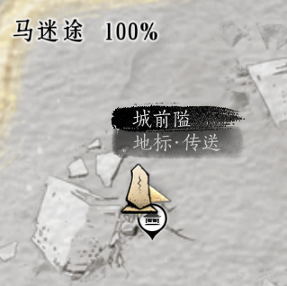


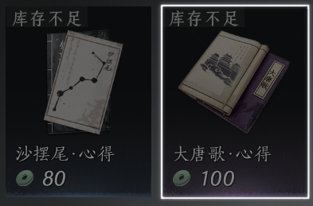
河西玉門關胡楊集-陳七七
這是個隱藏商人，陳七七需要五色琉璃彩。五色琉璃彩的采集方式可以參看本站五色琉璃彩的攻略。陳七七位置在胡楊集傳送點東北方向，下圖黑色圖標位置。可以在附近一棵樹上找到陳七七。這個商店可以兌換到20個心法箱子。
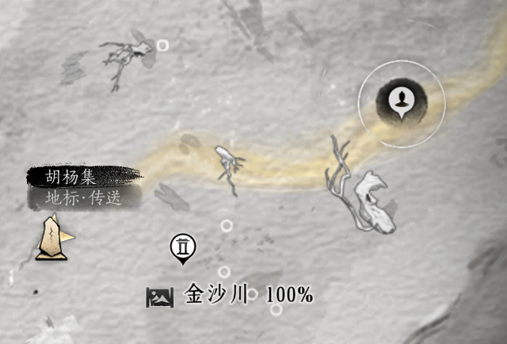

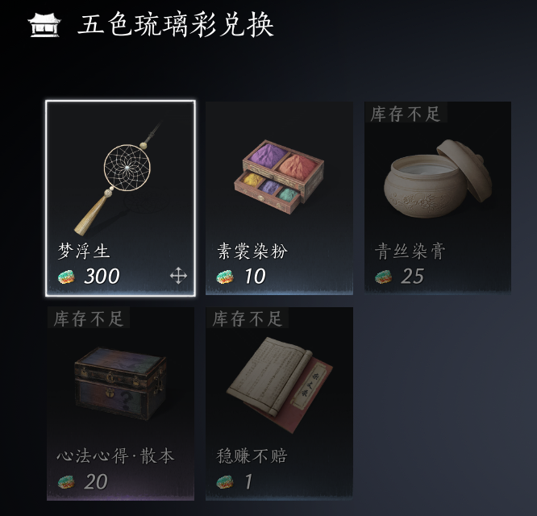
河西涼州鎮天水集-蠶郎的雜貨攤
蠶郎這里賣裂石鈞和一些通用的心法書頁。
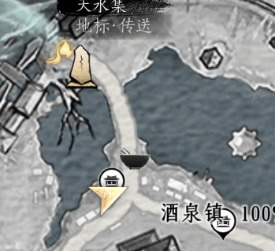
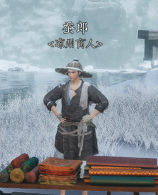

河西涼州鎮天水集-孫孟梁的雜貨攤
孫孟梁這里賣重要的增益食物配方（91階），和建造的配方。


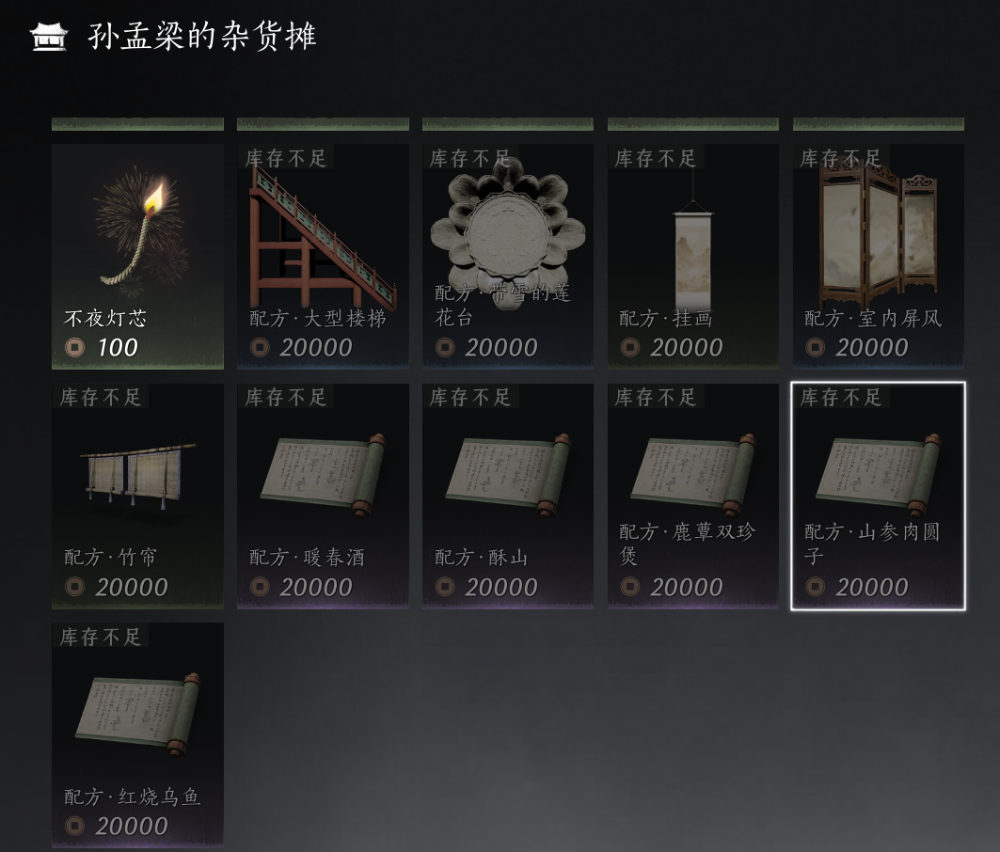
不見山墨守亭-鯪貨郎
鯪貨郎可以在不見山墨守亭傳送點的北邊找到，是一個像自動販賣機的裝置。它販賣96階的轉律石和變音石，破竹鳶流派的心法書頁，以及一些不見山的采集物品。
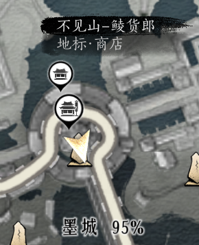

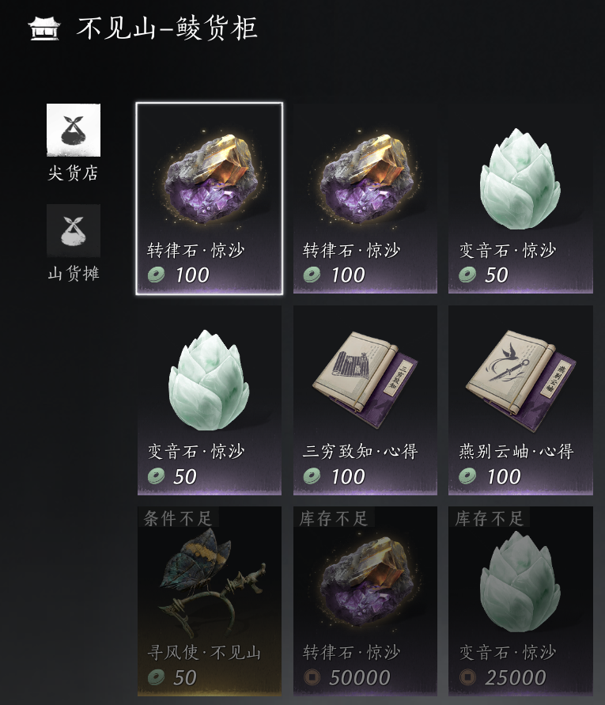
不見山隱峪-隱峪小店歐息
這是唯一一個藏在據點里面的小商店。先傳送到隱峪界碑，然后順著路往北殺進據點，可以在二層路的右側方向找到一個非常小的山洞，里面有個坐著的人偶。
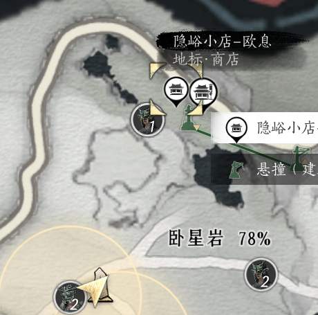
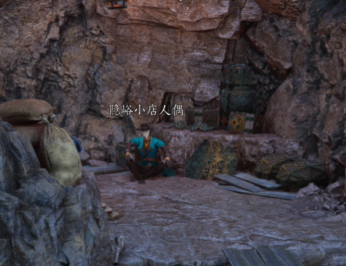

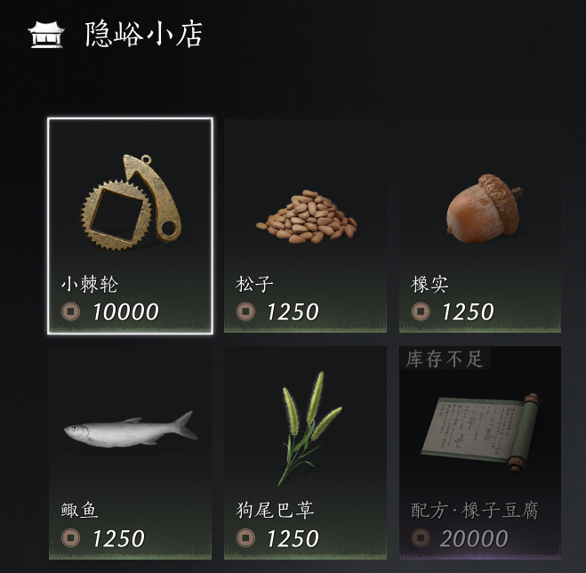
（注：上圖是人偶朝外看到的景色，如圖所見，山洞在據點的二層，朝向一個可以看見瀑布的地方，一層是據點的中心。）
不見山易墨坊-琳瑯小店
這也是個隱藏商人，位置是不見山的易墨坊傳送點，面向西南方向的小店就是（如下面地圖所示箭頭朝向）。里面有一只叫吉吉的猴子，可以用狩獵不見山“馬猴”的各種掉落材料和它兌換心法箱子，裊裊之音，特殊外觀等等。心法箱子的兌換材料“小棘輪”也可以通過加入墨山道解鎖門派商店后用通寶兌換。

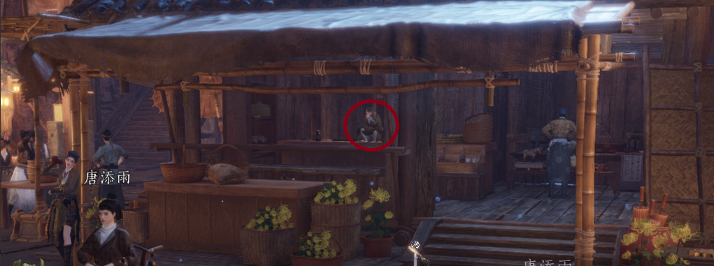
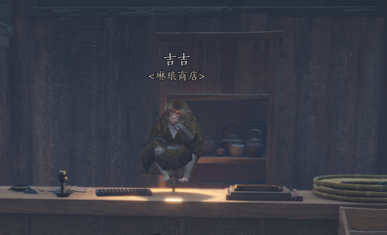
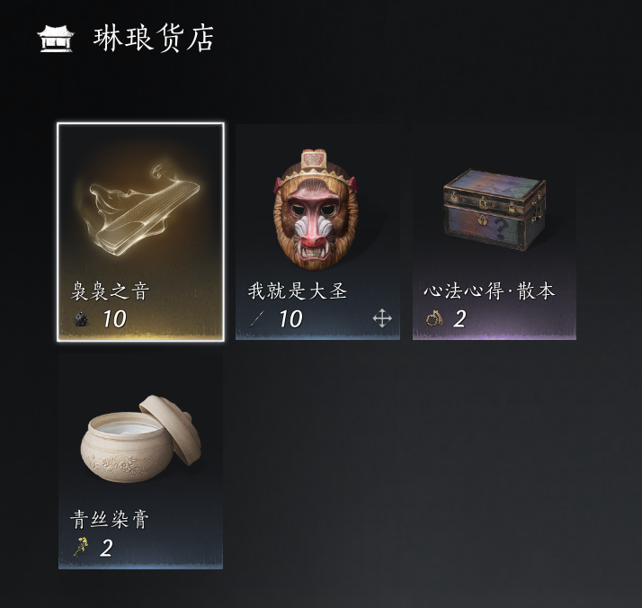